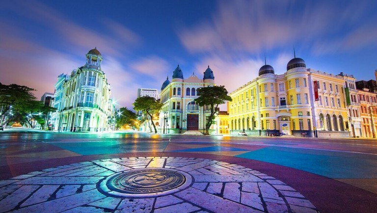
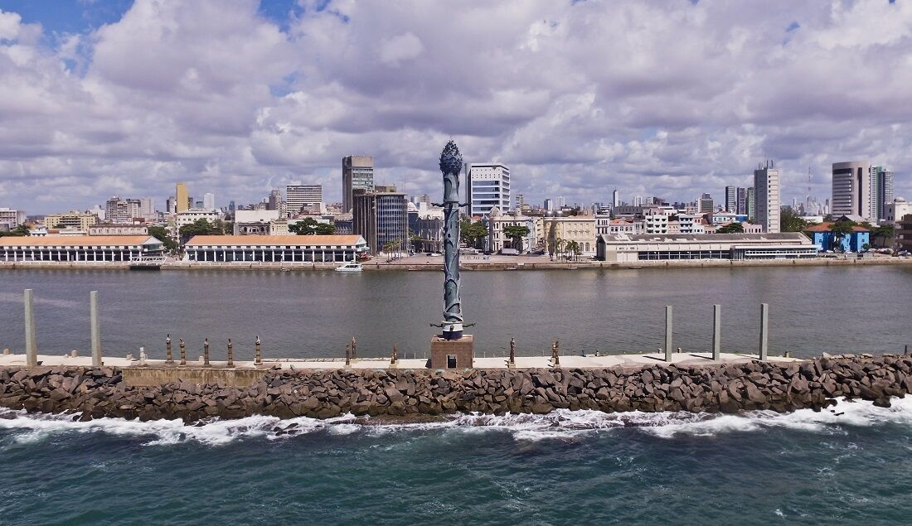

O **Recife Antigo** é um bairro cheio de história, arte e charme. Vamos conhecer dois lugares especiais:
A Praça do Marco Zero é o cartão postal da cidade. Além da vista incrível do porto e do Rio Capibaribe, você encontrará a **Rosa dos Ventos**, uma escultura do artista pernambucano Cícero Dias. Não deixe de fotografar o colorido letreiro com o nome "Recife".
O Parque das Esculturas fica no molhe do porto e abriga 90 obras do artista plástico Francisco Brennand. Destaque para a imponente **Coluna de Cristal**, com 32 metros de altura.
Para mais informações sobre esses lugares e outros pontos turísticos, visite o [site oficial do Recife Antigo](https://www.viajali.com.br/recife-antigo/).
Clique aqui para conhecer outro ponto turístico!